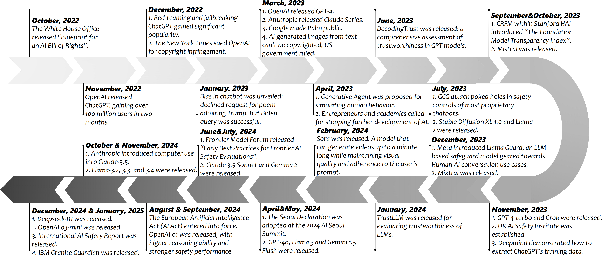

Generative foundation models (GenFMs), including large language and multimodal models, are transforming information retrieval and knowledge management. However, their rapid adoption raises urgent concerns about social responsibility, trustworthiness, and governance. This tutorial offers a comprehensive, hands-on overview of recent advances in responsible GenFMs, covering foundational concepts, multi-dimensional risk taxonomies, state-of-the-art evaluation benchmarks, and effective mitigation strategies.
We have been maintaining the awesome-llm-safety GitHub repo since 2023, which has over 1.5k stars. It collects thousands of trustworthy LLM papers, as well as comprehensive content such as tutorials, talks, news, etc. Building on this, we integrate real-world case studies and practical exercises using open-source tools, and present key perspectives from both policy and industry, including recent regulatory developments and enterprise practices. The session concludes with a discussion of open challenges and actionable guidance.
Introduction
Generative foundation models (GenFMs), such as large language and multimodal models, are transforming information access, retrieval, and knowledge systems. However, their deployment raises critical concerns around social responsibility, including fairness, bias mitigation, environmental impact, misinformation, and safety. This tutorial provides a comprehensive overview of recent research and best practices at the intersection of GFMs and responsible AI. We introduce foundational concepts, evaluation metrics, and mitigation strategies, with case studies across various domains. The tutorial is designed for researchers and practitioners interested in building or auditing socially responsible GFMs.
Target Audience, Prerequisites, and Benefits
Target Audience. This tutorial is designed for researchers, graduate students, and industry professionals in machine learning, information retrieval, data science, and AI ethics or governance.
Prerequisites. No specialized background is required beyond a general familiarity with artificial intelligence concepts. Prior experience with deep learning or generative models will be helpful, but the tutorial is structured to be accessible to participants with diverse technical backgrounds.
Benefits. Attendees will gain a comprehensive understanding of responsible AI practices as they relate to generative foundation models, including exposure to practical auditing workflows and hands-on tools for evaluating trustworthiness. The tutorial will equip participants with the knowledge and resources needed to identify and address social and ethical risks in real-world applications, ultimately enabling them to contribute to the development of more trustworthy and socially responsible AI systems.

Milestones of responsible and trustworthy generative foundation models from Oct. 2022 to Jan. 2025.
Section Title
Key Points
The Dual Nature of GenFMs and the Need for Responsibility
GenFMs as assistants and simulators; new risks in information systems.
Understanding Social Responsibility: Taxonomy and Case Studies
Six responsibility dimensions; real-world failure cases; prompt-based risk audits.
Evaluation Methods and Benchmarks
Key benchmarks and metrics; evaluation pipelines; hands-on open-source tools.
Enhancement Strategies for Responsible GenFMs
Mitigation techniques; effectiveness and scalability; hands-on simple mitigations.
Governance and Policy Perspectives
Policy frameworks; community standards; institutional roles.
Open Challenges and Community Discussion
Key open questions; interactive discussion.
The Dual Nature of GenFMs and the Need for Responsibility (20 min)
We outline the growing real-world impact of Generative Foundation Models (GenFMs) and why responsible behavior is essential. GenFMs act as assistants (e.g., writing, translation, code, search) and as simulators (e.g., synthetic data, user behavior, scientific scenarios). As they enter search, conversational agents, recommender systems, and decision pipelines, their influence on knowledge access and user experience rises, making responsible and trustworthy design vital. We motivate this with risks such as misinformation, exclusionary bias, and unintended memorization.
Understanding Social Responsibility: Taxonomy and Case Studies (45 min)
We present a taxonomy of responsibility dimensions: Safety (prevent harm/misuse), Privacy (avoid leakage/memorization), Robustness (handle shifts/adversarial prompts), Truthfulness (reduce hallucinations), Fairness (mitigate demographic/geographic/ideological bias), and Machine Ethics (ethically acceptable behavior). Each is illustrated with cases from open-source and commercial GenFMs (e.g., biased healthcare advice, offensive generation, identity leakage), linking technical issues to societal harms. Hands-on exercises use curated prompts and diagnostic tools (e.g., OpenAI moderator, Llama Guard, and bias probes).
Evaluation and Benchmarks (20 min)
We introduce phase one of the 2E strategy: Evaluation. Participants survey common benchmarks, diagnostic datasets, and metrics for fairness, safety, etc. We cover tools such as OpenAI Evals, TrustEval, and AI Fairness 360, with exercises to observe GenFM behavior under standard evaluations.
Enhancement for Responsible GenFMs (20 min)
Phase two: Enhancement. We discuss mitigation at multiple stages—data filtering, prompt steering, fine-tuning (e.g., RLHF), and post-processing (e.g., detoxification, Retrieval-Augmented Generation). Participants try basic techniques via notebooks and re-evaluate models post-intervention.
Governance and Policy Perspectives (20 min)
We review institutional, regulatory, and industry mechanisms: the EU AI Act, NIST AI RMF, open-source efforts (OpenRAIL, BigScience), and enterprise frameworks (OpenAI system cards and guidelines, Google’s Responsible AI Principles, Meta’s Llama Responsible Use Guide, Microsoft’s Responsible AI Standard). These set expectations for risk assessment, transparency, and responsible deployment.
Open Challenges and Discussion (25 min)
We highlight three open challenges: (1) keeping evaluation and mitigation adaptive as models and uses evolve; (2) managing alignment trade-offs that can introduce new vulnerabilities or biases; and (3) combining technical advances, interdisciplinary work, and forward-looking governance to address emerging risks. We invite discussion on shaping solutions for socially responsible foundation models.
Presenter Biography
Yue Huang
Yue Huang is a Ph.D. student in Computer Science and Engineering at the University of Notre Dame. He earned his B.S. in Computer Science from Sichuan University. His research investigates the trustworthiness and social responsibility of foundation models. Yue has published at premier venues including NeurIPS, ICLR, ICML, ACL, EMNLP, NAACL, CVPR, and IJCAI. His work has been highlighted by the U.S. Department of Homeland Security and recognized with the Microsoft Accelerating Foundation Models Research Award, the KAUST AI Rising Star Award (2025), Industry Mentor of NSF POSE Award, best paper award of DIGBUG@ICML'25, and SciSocLLM@KDD'25. He has delivered invited talks on “Trustworthiness in Large Language Models” and “Socially Responsible Generative Foundation Models” at UIUC, USC, UVA, IBM Research, and other institutions.
ZZ
Zhenhong Zhou
Zhenhong Zhou is a Ph.D. student in College of Computing and Data Science at Nanyang Technological University. He received his B.S. degree in 2022 and his M.S. degree in 2025 from Beijing University of Posts and Telecommunications. His research focuses on LLM safety, trustworthiness, and interpretability. Zhenhong has published at top AI venues, including ICLR, ICML, ACL, EMNLP, and AAAI. He maintains the popular LLM-safety repository on GitHub, which has accumulated over 1,500 stars. He also shares tutorials and blogs in the community with hundreds of thousands of reads.
Pin-Yu Chen
Dr. Pin-Yu Chen is a Principal Research Scientist at IBM Thomas J. Watson Research Center and Chief Scientist of the RPI-IBM AI Research Collaboration. He received his Ph.D. from the University of Michigan, Ann Arbor, in 2016. His research focuses on AI safety and robustness, with the long-term goal of building trustworthy machine learning systems. He received the IJCAI Computers and Thought Award in 2023 and is a co-author of Adversarial Robustness for Machine Learning. At IBM, he has been recognized with several awards, including IBM Master Inventor and the IBM Corporate Technical Award. His work has contributed to open-source libraries such as ART 360 and AIX 360. Dr. Chen has published over 50 papers at top AI venues, delivered tutorials at major conferences (e.g., NeurIPS, AAAI, CVPR), and organized workshops on adversarial learning. He serves as an editorial board member and senior program committee member for leading journals and conferences. He is an IEEE Fellow and ACM Distinguished Lecturer, and recipient of the IEEE SPS Industry Young Professional Leadership Award in 2025.
Xiangliang Zhang
Dr. Xiangliang Zhang is a Leonard C. Bettex Collegiate Professor in the Department of Computer Science and Engineering, University of Notre Dame. She was an Associate Professor in Computer Science at the KAUST. Her main research interests and experiences are in machine learning and data mining. She has published more than 270 refereed papers in leading international conferences and journals. She was invited to deliver an Early Career Spotlight talk at IJCAI-ECAI 2018. In 2009, she was awarded the European Research Consortium for Informatics and Mathematics (ERCIM) Alain Bensoussan Fellowship. She regularly serve on the Program Committee for premier conferences like SIGKDD (Area Chair, Senior PC), AAAI (Area Chair, Senior PC), IJCAI (Area Chair, Senior PC), etc. She also serves as Editor-in-Chief of ACM SIGKDD Explorations, associated editor for IEEE Transactions on Dependable and Secure Computing (TDSC) and Information Sciences. She recently serves as the PC Co-chair of KDD 2026 (research track).